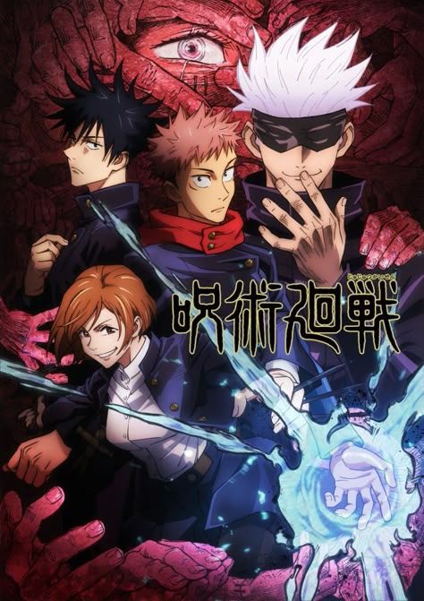

Jujutsu Kaisen
Released: October 3, 2020
Genre: Action, Supernatural, Dark Fantasy
Yuji Itadori becomes involved in the world of curses when he swallows a powerful cursed object—Sukuna’s finger. Enrolled in Tokyo Jujutsu High, he must battle evil curses and protect humanity while sharing his body with a dangerous entity.
Cast
Yuji Itadori
Voice: Junya Enoki
Satoru Gojo
Voice: Yūichi Nakamura
Nobara Kugisaki
Voice: Asami Seto
Megumi Fushiguro
Voice: Yuma Uchida